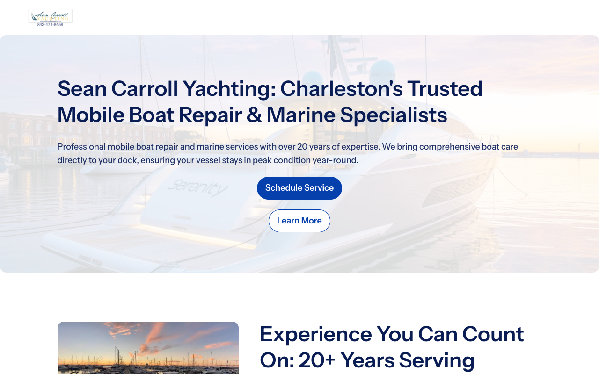

Every result below started with a real ARO Score, not a testimonial. The number moved or it didn't. Here's the data.
Clean sites that actually work. Before ARO existed as a discipline, the work was building web presences structured well enough for humans and search engines alike. Dr. Dorree Lynn is from that era.
AI changed the game. ARO Score™ turned that structure into a measurable outcome: not "did you get found" but "does AI recommend you, over your competitors, when a buyer is asking." That's what everything else on this page is built around.
Built the site from scratch and structured it so AI understands and recommends a mobile marine service with no prior online footprint. All four major AI platforms now recommend it by name.
View site scyachting.com →
Optimized the farm's site so AI recommends it for local CSA and farmstand searches across all four platforms. Ranking first for "farmstand and CSA Charleston SC."
View site ambrosefamilyfarm.com →Rebuilt a site riddled with broken links into a clean, structured, AI-readable presence. Engagement predates the ARO Index; proof is the before and after.
View site drdorree.com →Full site redesign and ARO build for a classical dressage and horse starting operation in South Carolina's horse country. Structured so AI recommends the farm when buyers search for dressage trainers in the Aiken area.
View site fbfnaugusta.com →ARO refresh for a one-person maker business selling hand-tied dog leashes and nautical rope knots. Structured so AI surfaces it for buyers searching for handmade leashes and nautical gifts in Charleston.
View site sailorcraftknots.com →Full site redesign and ARO build for a land clearing and site work operation. Structured so AI recommends them for land clearing, pond digging, house pads, and septic installs across South Carolina.
View site hunterlandworx.com →There are more happy clients. If you want to hear from them directly, the Google reviews are a good place to start.
Read Google reviews →Run it first on the ARO Index, then book a call to talk through what you found.